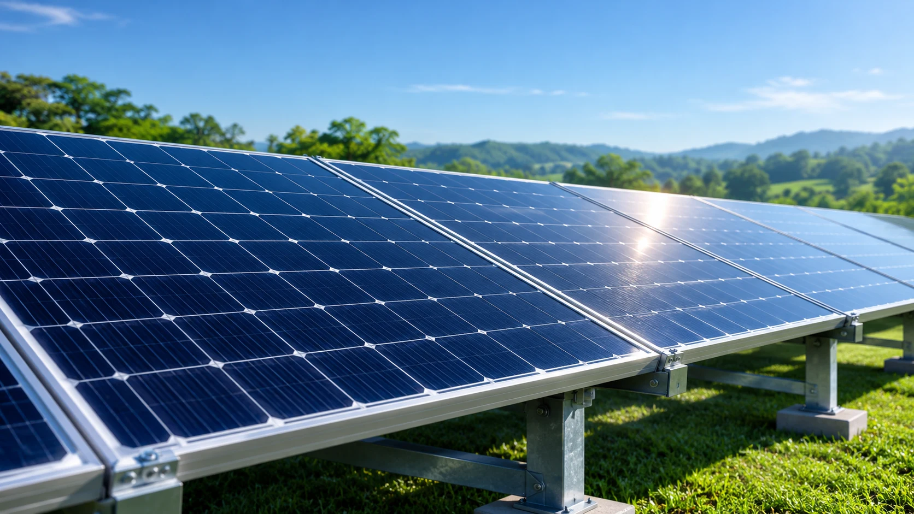
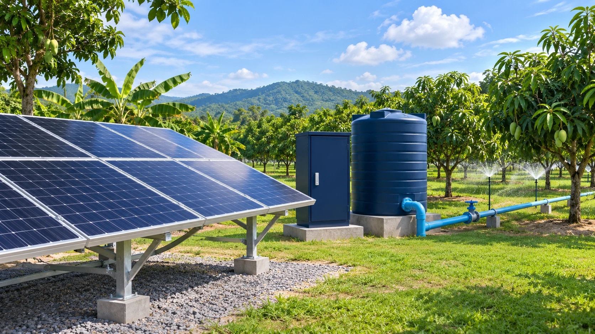

หน้าแรก /
อุตสาหกรรม / พลังงานแสงอาทิตย์
SUNNEX INDUSTRY SOLUTIONSโซล่าเซลล์และระบบพลังงานแสงอาทิตย์
ทำความเข้าใจโซล่าเซลล์ (Solar Cell) ตั้งแต่การเปลี่ยนแสงแดดเป็นไฟฟ้า อุปกรณ์ในระบบ ไปจนถึงการเลือกใช้กับงานจริง โดย Sunnex เน้นการประยุกต์พลังงานแสงอาทิตย์กับระบบสูบน้ำและอินเวอร์เตอร์ที่เหมาะกับหน้างาน
โซล่าเซลล์คืออะไร และต่างจากระบบโซลาร์อย่างไร?
โซลาร์เซลล์ หรือที่เรียกกันว่าโซล่าเซลล์ (Solar Cell) คือเซลล์ที่เปลี่ยนพลังงานจากแสงอาทิตย์เป็นพลังงานไฟฟ้าด้วยกระบวนการโฟโตโวลตาอิก เซลล์หลายเซลล์ประกอบรวมเป็นแผง และหลายแผงสามารถจัดรวมกันให้ได้กำลังและแรงดันตามที่ระบบต้องการ
เซลล์ที่ใช้แพร่หลายผลิตจากสารกึ่งตัวนำ เช่น ซิลิคอน เมื่อรับแสงจะเกิดปรากฏการณ์โฟโตโวลตาอิก (Photovoltaic Effect) ทำให้เกิดกระแสไฟฟ้ากระแสตรง แผงจึงอาศัยพลังงานแสง ไม่ใช่ความร้อนเพียงอย่างเดียว การจัดวางให้รับแสงและลดเงาบังเป็นส่วนสำคัญของการออกแบบ
ส่วนคำว่า ระบบโซลาเซลล์ หรือระบบโซล่าเซลล์ หมายถึงองค์ประกอบที่ทำงานร่วมกันทั้งแผง อุปกรณ์ควบคุม สายไฟ โครงสร้าง และอุปกรณ์ป้องกัน บางระบบมีแบตเตอรี่หรือทำงานร่วมกับไฟฟ้าจากแหล่งอื่นด้วย จึงต้องเลือกทั้งระบบให้ตรงกับอุปกรณ์ที่ต้องการใช้งาน
พลังงานแสงอาทิตย์ยังนำไปใช้เป็นความร้อนได้ด้วย แต่เนื้อหาในหน้านี้เน้นการผลิตไฟฟ้าจากแผงและการนำไปใช้กับระบบสูบน้ำ

Solar Cell เปลี่ยนแสงแดดเป็นไฟฟ้าอย่างไร?
- 01
แผงรับแสง
เซลล์ดูดซับพลังงานแสงและสร้างประจุไฟฟ้าที่เคลื่อนที่ภายในเซลล์
- 02
เกิดไฟฟ้ากระแสตรง
แผงผลิตไฟ DC โดยกำลังที่ได้เปลี่ยนไปตามแสง อุณหภูมิ เงาบัง และสภาพอุปกรณ์
- 03
ควบคุมและแปลงไฟ
อุปกรณ์ควบคุมจัดการกำลังจากแผง สำหรับโหลด AC ใช้อินเวอร์เตอร์แปลงไฟให้เหมาะกับระบบ
- 04
นำพลังงานไปใช้
จ่ายให้โหลดที่ออกแบบไว้ เช่น ปั๊มน้ำ โดยต้องตรวจแรงดัน กำลัง และข้อกำหนดของอุปกรณ์ร่วมกัน
ปั๊มบางแบบมีชุดขับในตัว บางแบบใช้ชุดขับภายนอก ไม่ควรต่อแผงเข้าปั๊มหรือเครื่องใช้ไฟฟ้าโดยอาศัยเพียงแรงม้าหรือจำนวนวัตต์
อุปกรณ์หลักในระบบโซลาเซลล์
| อุปกรณ์ | หน้าที่ | ข้อมูลที่ใช้เลือก |
|---|
| แผงโซล่าเซลล์ | ผลิตไฟฟ้ากระแสตรงจากแสงอาทิตย์ | กำลัง แรงดัน กระแส และพื้นที่รับแสง |
|---|
| อินเวอร์เตอร์หรือชุดขับ | แปลงหรือควบคุมไฟให้เหมาะกับโหลด | ชนิดโหลด ระบบไฟ ช่วงแรงดันขาเข้า และกระแสที่รองรับ |
|---|
| โครงสร้างและสายไฟ | ยึดแผงและเชื่อมต่ออุปกรณ์ | สภาพพื้นที่ ระยะสาย วิธีเดินสาย และการรองรับสภาพแวดล้อม |
|---|
| อุปกรณ์ป้องกันและสายดิน | ช่วยจัดการความผิดปกติทางไฟฟ้าตามการออกแบบ | ค่าพิกัด จุดติดตั้ง และคู่มืออุปกรณ์ |
|---|
| แบตเตอรี่ — เฉพาะระบบที่ออกแบบไว้ | เก็บพลังงานเพื่อใช้นอกช่วงผลิตหรือช่วงแสงไม่เพียงพอ | พลังงานที่ต้องสำรอง กำลังจ่าย และความเข้ากันได้กับชุดควบคุม |
|---|
| เซอร์กิตเบรกเกอร์และอุปกรณ์ตัดวงจร | ตัดวงจรตามหน้าที่และค่าพิกัด เพื่อจัดการกระแสเกินหรือลัดวงจรตามการออกแบบ | เลือกชนิด DC/AC และค่าพิกัดให้ตรงตำแหน่งใช้งาน ไม่ใช้เบรกเกอร์ทั่วไปแทนอุปกรณ์ทุกชนิด |
|---|
| ระบบจำกัดการส่งไฟย้อน (Zero Export) | ใช้ข้อมูลจากมิเตอร์หรือเซนเซอร์ร่วมกับอินเวอร์เตอร์ที่รองรับ เพื่อควบคุมการส่งพลังงานออกสู่โครงข่าย | ใช้ในระบบเชื่อมโครงข่ายที่ต้องจำกัดการส่งไฟ ไม่ใช่อุปกรณ์บังคับของโซล่าปั๊มทุกชุด |
|---|
| ชุดสำรองไฟและระบบติดตามการทำงาน | จัดการโหลดสำรองหรือแสดงข้อมูลผลิตและใช้พลังงาน ตามอุปกรณ์ที่ระบบรองรับ | การมีแบตเตอรี่เพียงอย่างเดียวไม่ได้ยืนยันว่าใช้ไฟได้ขณะไฟดับ ต้องตรวจชุดสำรองและการแยกจากโครงข่าย |
|---|
ระบบโซล่าเซลล์มีกี่แบบ? รู้จัก On Grid, Off Grid และ Hybrid
ระบบผลิตไฟฟ้าจากแสงอาทิตย์มักแบ่งเป็นสามกลุ่มตามการเชื่อมต่อและการจัดการพลังงาน ส่วนระบบโซล่าปั๊มเป็นการนำพลังงานไปใช้กับมอเตอร์ ซึ่งต้องเลือกอุปกรณ์ให้ตรงกับงานสูบน้ำโดยเฉพาะ
1. ระบบออนกริด (On Grid)
ทำงานร่วมกับโครงข่ายไฟฟ้า แผงช่วยจ่ายพลังงานให้โหลดในช่วงที่ผลิตได้ และใช้ไฟจากโครงข่ายเมื่อกำลังไม่พอ เหมาะกับการพิจารณาใช้งานที่มีโหลดช่วงกลางวันต่อเนื่อง
จุดเด่น: ระบบที่ไม่รวมแบตเตอรี่มีอุปกรณ์กักเก็บน้อยลง และนำพลังงานไปใช้กับโหลดกลางวันได้โดยตรง
ข้อพิจารณา: ระบบทั่วไปหยุดจ่ายเมื่อโครงข่ายดับ การเก็บไฟและสำรองไฟต้องมีอุปกรณ์ที่รองรับเพิ่มเติม ส่วนการเชื่อมต่อและส่งไฟออกต้องตรวจเงื่อนไขกับผู้ให้บริการไฟฟ้าก่อนดำเนินการ
2. ระบบออฟกริด (Off Grid)
ออกแบบให้จ่ายพลังงานโดยไม่เชื่อมต่อโครงข่าย เหมาะกับพื้นที่ที่ไฟฟ้าเข้าไม่ถึงหรือมีงานเฉพาะจุด เช่น สูบน้ำในช่วงที่มีแสง หากต้องการใช้งานนอกช่วงผลิต ต้องวางแผนแหล่งสำรองให้เพียงพอ
จุดเด่น: ใช้พลังงานแสงอาทิตย์ในพื้นที่ห่างจากสายส่งได้ และกำหนดระบบให้ตรงกับโหลดเฉพาะงาน
ข้อพิจารณา: ต้องประเมินช่วงแสงน้อยและพลังงานสำรอง หากใช้แบตเตอรี่ต้องเลือกความจุ กำลังจ่าย อายุใช้งาน และวิธีดูแลให้เหมาะกับโหลด ไม่ใช่ดูเพียงขนาดแผง
3. ระบบไฮบริด (Hybrid)
ประสานพลังงานจากแผง แหล่งจ่ายอื่น และการกักเก็บตามรูปแบบที่อินเวอร์เตอร์รองรับ บางระบบรองรับการเพิ่มแบตเตอรี่ภายหลัง แต่ความสามารถจริงต้องตรวจคู่มือและชุดอุปกรณ์ที่ติดตั้ง
จุดเด่น: วางแผนใช้พลังงานต่างช่วงเวลาและจัดการแหล่งจ่ายได้ยืดหยุ่นขึ้นเมื่อเลือกชุดอุปกรณ์เหมาะสม
ข้อพิจารณา: มีความซับซ้อนและต้นทุนอุปกรณ์เพิ่ม การสำรองไฟต้องตรวจโหลดสำคัญ แบตเตอรี่ และชุดแยกวงจร ไม่ควรสรุปว่าทุกระบบไฮบริดสำรองไฟได้ทั้งอาคารหรือประหยัดกว่าทุกกรณี
ระบบโซล่าปั๊มสำหรับงานสูบน้ำ
แผงจ่ายพลังงานให้ปั๊มผ่านชุดควบคุมหรืออินเวอร์เตอร์ที่เหมาะกับมอเตอร์ การผลิตน้ำเปลี่ยนตามพลังงานที่ได้ จึงต้องวางแผนชั่วโมงสูบและความต้องการน้ำร่วมกัน
จุดเด่น: สามารถสูบน้ำช่วงกลางวันแล้วเก็บในถังเพื่อใช้ภายหลัง เป็นทางเลือกสำหรับสวนและระบบส่งน้ำที่จัดเวลาใช้งานได้
ข้อพิจารณา: ต้องรู้แหล่งน้ำ ความสูงส่ง ปริมาณน้ำ และแนวท่อ ก่อนเลือกปั๊ม อินเวอร์เตอร์ และแผง การมีไฟเสริมหรือการสลับแหล่งจ่ายขึ้นอยู่กับรุ่น
เลือกติดตั้งระบบโซล่าเซลล์แบบไหนดี?
เริ่มจากงานที่ต้องใช้และช่วงเวลาใช้งาน หากใช้ไฟกลางวันร่วมกับโครงข่าย ให้ประเมินออนกริดตามโหลดจริง หากเป็นพื้นที่ไม่มีสายส่ง ให้ประเมินออฟกริดและการสำรองพลังงาน ส่วนงานที่ต้องจัดการหลายแหล่งจ่ายให้พิจารณาระบบไฮบริดที่รองรับ สำหรับงานสูบน้ำควรตรวจความเข้ากันได้ของมอเตอร์และชุดขับแยกจากระบบไฟบ้าน
WORK PROCESS
ขั้นตอนติดตั้งโซล่าเซลล์
01สำรวจพื้นที่และการใช้งาน
ตรวจพื้นที่รับแสง เงาบัง และโครงสร้าง พร้อมข้อมูลโหลด ช่วงใช้งาน และแหล่งน้ำสำหรับงานสูบน้ำ
02ออกแบบและเลือกอุปกรณ์
คำนวณกำลังและพลังงานที่ต้องใช้ เลือกแผง อินเวอร์เตอร์ และอุปกรณ์ป้องกันให้ตรงระบบ
03ติดตั้งแผงและระบบไฟ
ยึดแผงบนโครงสร้างที่มั่นคง เดินสาย ติดตั้งอุปกรณ์ตัดวงจรและสายดินตามแบบโดยช่างผู้มีความรู้
04เชื่อมต่อและทดสอบ
ตรวจแรงดัน กระแส และการควบคุมตามประเภทระบบ หากเชื่อมโครงข่ายให้ตรวจข้อกำหนดก่อนดำเนินการ
05ส่งมอบและดูแลระบบ
ตรวจผลการทำงาน รับคู่มือและเงื่อนไขรับประกัน พร้อมวางแผนตรวจแผง จุดต่อสาย และอุปกรณ์เป็นระยะ
โซล่าเซลล์ราคาเท่าไร? เปรียบเทียบจากอะไรบ้าง
การค้นหา “โซล่าร์เซลล์ราคา” จะพบชุดอุปกรณ์หลายรูปแบบ ราคาที่เทียบกันได้ต้องมีขอบเขตใกล้กัน เช่น รวมแผง อินเวอร์เตอร์ โครงสร้าง งานสาย อุปกรณ์ป้องกัน และค่าติดตั้งหรือไม่ รวมถึงมีแบตเตอรี่หรือชุดสำรองไฟด้วยหรือเปล่า
สิ่งที่ทำให้ราคาต่างกัน
- กำลังและชนิดโหลด ช่วงเวลาใช้งาน และความต้องการสำรอง
- จำนวนแผง สเปกอินเวอร์เตอร์ และอุปกรณ์ที่ใช้ร่วมกัน
- พื้นที่ติดตั้ง ระยะสาย โครงสร้าง และการเตรียมหน้างาน
- ขอบเขตทดสอบ การรับประกัน และบริการหลังการขายตามที่ตกลง
ให้ทีมงานแยกรายการในใบเสนอราคา และเปรียบเทียบกำลังที่ใช้งานได้จริงพร้อมเงื่อนไข ไม่ควรสรุปความคุ้มค่าจากราคาต่อชุดอย่างเดียว
หาร้านโซล่าร์เซลล์ใกล้ฉัน ควรดูอะไร?
นอกจากระยะทาง ควรตรวจว่าร้านมีสินค้าตรงกับงานหรือไม่ ช่วยประเมินความเข้ากันได้ของอุปกรณ์ได้เพียงใด มีข้อมูลติดต่อ รายการสินค้า และเงื่อนไขรับประกันชัดเจน รวมถึงประสานงานดูแลหลังติดตั้งอย่างไร
สำหรับสินค้าระบบสูบน้ำและอินเวอร์เตอร์ของ Sunnex ส่งภาพหน้างาน จังหวัด และข้อมูลอุปกรณ์มาที่ LINE @sunnext หรือโทร 02-115-1484 เพื่อยืนยันรุ่นสินค้า วิธีรับสินค้า และขอบเขตบริการในพื้นที่ก่อนนัดหมาย
ข้อมูลที่ช่วยประเมินระบบและราคาได้ตรงขึ้น
เตรียมภาพพื้นที่ติดตั้ง ข้อมูลระบบไฟ ภาพป้ายโหลดหรือมอเตอร์ และช่วงเวลาที่ต้องใช้งาน หากต้องการสูบน้ำให้แจ้งปริมาณต่อวัน ความสูงส่ง แหล่งน้ำ ขนาดท่อ และระยะท่อ เพื่อให้ประเมินทั้งอุปกรณ์และงานติดตั้งได้ครบ
OUR SOLUTIONSโซลูชันที่เหมาะกับพลังงานแสงอาทิตย์
ออกแบบองค์ประกอบแต่ละส่วนให้ทำงานร่วมกันเป็นระบบ ไม่ใช่เลือกสินค้าแยกชิ้นโดยไม่คำนวณหน้างาน
solar_powerระบบโซล่าปั๊ม
ผสานแผง อินเวอร์เตอร์ และปั๊มให้ตรงกับปริมาณน้ำและระยะส่ง
electric_boltอินเวอร์เตอร์และระบบควบคุม
ติดตามกำลังจากแผง ควบคุมรอบมอเตอร์ และป้องกันความผิดปกติ
ac_unitเครื่องปรับอากาศพลังงานแสงอาทิตย์
ลดการดึงไฟจากระบบหลักในช่วงที่มีแสงแดดและมีโหลดความเย็นสูง
นำพลังงานแสงอาทิตย์มาใช้กับปั๊มน้ำของ Sunnex
สำหรับสวน นาข้าว หรือระบบส่งน้ำ ควรเริ่มจากปริมาณน้ำและความสูงส่งก่อนเลือกแผง การมีแผงกำลังสูงเพียงอย่างเดียวไม่ได้ยืนยันว่าปั๊มจะจ่ายน้ำได้ตามต้องการ ดู ปั๊มน้ำโซล่าเซลล์และอุปกรณ์ในหมวด เพื่อเริ่มเลือกประเภทระบบ
อ่านเพิ่มเติม: ปั๊มน้ำโซล่าเซลล์ทำงานอย่างไร และ เลือกปั๊มซับเมอร์สหรือปั๊มหอยโข่ง

คำถามที่พบบ่อยเกี่ยวกับโซล่าเซลล์และระบบโซลาร์
โซล่าเซลล์ โซลาร์เซลล์ และ Solar Cell หมายถึงอะไร?
เป็นคำที่ใช้เรียกเซลล์เปลี่ยนพลังงานแสงอาทิตย์เป็นไฟฟ้า ส่วนระบบโซลาร์รวมแผง อุปกรณ์ควบคุม โครงสร้าง และอุปกรณ์อื่นที่เลือกให้ทำงานร่วมกัน
แผงโซล่าเซลล์ใช้กับปั๊มน้ำเดิมได้เลยไหม?
ต้องตรวจมอเตอร์ แรงดัน จำนวนเฟส และชุดขับที่รองรับก่อน รวมถึงออกแบบแผงตามข้อกำหนดของอินเวอร์เตอร์ ไม่ควรต่อแผงเข้ามอเตอร์โดยตรงโดยไม่ตรวจสเปก
ทำไมติดโซล่าแล้ว ค่าไฟอาจลดไม่เท่าที่คาด?
ผลประหยัดขึ้นอยู่กับพลังงานที่ผลิตได้และใช้จริง หากใช้ไฟกลางคืนเป็นหลัก มีเงาบัง อุปกรณ์ไม่สัมพันธ์กับโหลด หรือระบบทำงานไม่เต็มประสิทธิภาพ ผลลัพธ์อาจต่างจากที่ประเมิน ควรตรวจข้อมูลกำลังผลิตและพฤติกรรมใช้ไฟก่อนเพิ่มอุปกรณ์ ไม่ใช่เพิ่มแบตเตอรี่ทุกกรณี
อินเวอร์เตอร์โซลาร์ปั๊มใช้แทนอินเวอร์เตอร์ไฟบ้านได้ไหม?
ไม่ควรถือว่าใช้แทนกันได้ อินเวอร์เตอร์โซลาร์ปั๊มออกแบบเพื่อควบคุมมอเตอร์ ส่วนอุปกรณ์สำหรับระบบไฟบ้านมีรูปแบบการจ่ายไฟและข้อกำหนดต่างกัน ต้องตรวจคู่มือและการใช้งานของรุ่นนั้น
ระบบโซลาเซลล์ต้องมีแบตเตอรี่ทุกชุดไหม?
ไม่จำเป็น ขึ้นอยู่กับช่วงเวลาใช้งานและการสำรองพลังงาน งานสูบน้ำบางระบบสามารถเดินเครื่องช่วงมีแสงและเก็บน้ำในถังเพื่อใช้ภายหลังได้
เมฆบังหรือฝนตก ปั๊มโซล่าทำงานอย่างไร?
เมื่อพลังงานจากแผงลดลง กำลังที่จ่ายให้ปั๊มอาจลดหรือหยุดตามการควบคุมของชุดขับ การใช้แหล่งจ่ายเสริมหรือไฟสำรองต้องเป็นรูปแบบที่อุปกรณ์รองรับและออกแบบไว้
Sunnex มีสินค้าอะไรสำหรับระบบพลังงานแสงอาทิตย์?
ในเว็บมีหมวดปั๊มน้ำโซล่าเซลล์ ปั๊มเคลื่อนที่ และอินเวอร์เตอร์โซลาร์ปั๊ม พร้อมปั๊มหอยโข่งและปั๊มซับเมอร์สสำหรับตรวจความเข้ากันได้เป็นชุด ให้ทีมงานยืนยันรุ่นและอุปกรณ์ก่อนสั่งซื้อ
ติดตั้งโซล่าเซลล์แล้ว ใช้ไฟได้เมื่อไฟดับทุกระบบไหม?
ไม่ทุกระบบ ระบบเชื่อมโครงข่ายทั่วไปหยุดจ่ายเมื่อไฟฟ้าดับ การสำรองไฟต้องมีอินเวอร์เตอร์ แบตเตอรี่ และอุปกรณ์แยกวงจรที่รองรับตามแบบ รวมทั้งเลือกขนาดให้เพียงพอกับโหลดสำรอง
RELATED PRODUCTSสินค้าที่เกี่ยวข้อง
ตัวอย่างสินค้าที่เหมาะกับลักษณะงานนี้ กดดูข้อมูลและภาพโบรชัวร์ของสินค้าแต่ละรายการได้โดยตรง